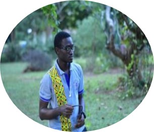

|  | Daniel MainooTeaching Assistant |
I am a teaching Assistant at the department of Biomedical Engineering in the University of Ghana and I am passionate about machine learning in the field of drug discovery. During my undergraduate studies, I and my collegues from the department conducted a research that was centered on the prediction of activators and inhibitors of alpha-glucosidase enzyme.This work is aimed to help develop new drugs for combating diseases such as diabetes and pompe disease which the enzyme, alpha-glucosidase is associated with.
| Date | Place of Work | Role/Position |
|---|---|---|
| July 2019 - August 2019 | Korle-Bu Teaching Hospital, Accra | Intern |
| November 2021 - December 2021 | Bioinstrmentaion Lab, University of Ghana | Intern |
| July 2020 - August 2022 | Deeper Life Campus Fellowhip, University Of Ghana | Music Director |
|
|
||||
|
|
||||
|
|